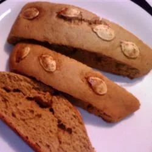

Pumpkin Biscotti

Description
This recipe is easy to make at home and ingredients doesn't cost much.
With approximately 1 hour of your time you can make Pumpkin Biscotti.
Try it out yourself!
Ingredients
- 2 ½ cups all-purpose flour
- 1 teaspoon baking powder
- 1 teaspoon ground cinnamon
- ½ teaspoon ground nutmeg
- ¼ teaspoon salt
- ⅛ teaspoon ground cloves
- ⅛ teaspoon ground ginger
- ¾ cup white sugar
- ¼ cup butter, softened
- ¼ cup brown sugar
- 2 eggs
- ½ cup pumpkin puree
- 2 tablespoons molasses
- 1 teaspoon vanilla extract
- 2 tablespoons pumpkin seeds (Optional)
Steps
- Sift flour, baking powder, cinnamon, nutmeg, salt, cloves, and ginger together in a large bowl.
- Beat white sugar, butter, and brown sugar together in another bowl using an electric mixer until light and crumbly. Add eggs; beat for 1 minute. Add pumpkin puree, molasses, and vanilla extract; beat until well blended, about 1 minute. Blend in the flour mixture using the mixer or a wooden spoon until dough is sticky and incorporated.
- Cover dough with waxed paper; refrigerate for 1 hour.
- Preheat oven to 350 degrees F (175 degrees C). Line 2 baking sheets with parchment paper.
- Dip your hands into a small bowl of water. Shape the dough into two loaves that are 1 inch high, 3 to 4 inches wide, and 10 inches long, Place each loaf onto a baking sheet; top with pumpkin seeds.
- Bake in the preheated oven until bottoms are dry, 20 to 24 minutes. Let cool for 5 minutes. Reduce oven temperature to 275 degrees F (135 degrees C).
- Transfer loaves to a flat work surface. Cut each into 10 diagonal slices about 1/2 inch thick. Place sliced biscotti back on the baking sheet.
- Continue baking until light golden brown, about 20 minutes. Reduce oven temperature to 200 degrees F (95 degrees C). Continue baking until dry, about 20 minutes more. Transfer to wire racks to cool.
Return to main page